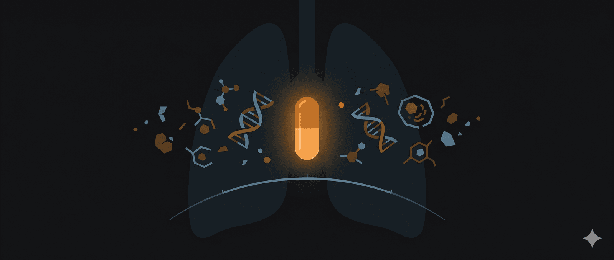

Mẹ đã mất được 7 tháng rồi…
Tôi ngồi viết những dòng này vào một buổi chiều mùa đông, khi ánh nắng vàng le lói qua khe cửa sổ, đúng kiểu ánh nắng mà mẹ hay thích ngồi đọc báo. Đã gần nửa năm kể từ ngày mẹ ra đi, nhưng có những đêm tôi vẫn giật mình thức giấc, nghĩ mình nghe thấy tiếng mẹ ho từ phòng bên. Rồi chợt nhớ, căn phòng ấy giờ đã trống không.
Ba năm rưỡi. Nghe thì ngắn, nhưng khi sống qua từng ngày, từng đêm thao thức đọc tài liệu y khoa bằng tiếng Anh mà phải tra Google dịch nửa đêm, từng lần ngồi ngoài phòng bác sĩ chờ kết quả xét nghiệm, nó dài không tưởng. Tôi viết bài này không phải để kể về một chiến thắng. Mẹ tôi đã mất. Nhưng nếu những cái bẫy mà chúng tôi đã vấp phải có thể giúp một gia đình nào đó tránh được dù chỉ một sai lầm, thì có lẽ cũng đáng.
Hành trình chẩn đoán và những lần kháng thuốc
Lẽ ra chúng tôi có thể phát hiện sớm hơn
“Chắc do mẹ đi bộ nhiều quá, xương khớp tuổi này mà.”
Bố tôi nói thế khi mẹ than đau chân trái. Tháng 11/2022, mẹ 58 tuổi, vẫn khỏe, chỉ có ho kéo dài mấy tháng không đỡ. Ai mà chẳng ho vào mùa gió? Chúng tôi mua thuốc ho ở hiệu thuốc, uống hết lọ này đến lọ khác. Đi khám thì bác sĩ bảo viêm họng, kê kháng sinh. Rồi lại ho. Rồi lại đi khám. Cứ thế mấy tháng trời.
Đến khi mẹ đau chân không đi lại được nữa, chúng tôi mới đưa nhập viện.
Ngày 16/11/2022, bác sĩ gọi cả nhà vào phòng. Tôi nhớ căn phòng ấy mùi thuốc tây nồng nặc. Bác sĩ mở màn hình máy tính, chỉ vào những hình ảnh CT. “Ung thư phổi tuyến, giai đoạn muộn, đã di căn xương và não.”
Tôi không khóc. Chỉ ngồi đó, như có ai vừa đấm mạnh vào bụng. Bố tôi hỏi lặp đi lặp lại: “Chắc chắn chứ bác sĩ? Chắc chắn chứ?”
Những cơn ho dai dẳng ấy không phải ho thường. Cơn đau chân ấy không phải thoái hóa khớp. Đó là tiếng cơ thể kêu cứu, nhưng chúng tôi không nghe, hay đúng hơn là không muốn nghe, vì sợ phải đối mặt. Bây giờ nghĩ lại, tôi hay khuyên người ta: nếu có điều kiện, phụ nữ trên 50 tuổi nên chụp CT liều thấp phổi định kỳ hàng năm. Ho kéo dài không khỏi, đau xương tăng dần, gầy sút cân, đừng nghĩ là bệnh thường. Tiền khám luôn rẻ hơn tiền chữa, nhưng quan trọng hơn: phát hiện sớm là cơ hội sống.
18 tháng như một giấc mơ đẹp
Sau khi có kết quả gen – mẹ dương tính EGFR L858R – bác sĩ đề xuất osimertinib, thuốc nhắm trúng đích thế hệ 3. Tôi dành cả tuần đọc tài liệu: Google Scholar, PubMed, các diễn đàn bệnh nhân quốc tế. Những từ “exon 21”, “tyrosine kinase inhibitor” từ xa lạ dần quen thuộc.
Osimertinib không rẻ. Mỗi tháng khoảng 40 triệu. Chúng tôi bán mảnh đất ở quê, vay mượn thêm. Quyết tâm thử.
Rồi điều kỳ diệu xảy ra.
Hai tuần uống thuốc, mẹ bớt đau chân. Một tháng sau, hạch cổ to như quả trứng cút xẹp xuống. Hai tháng sau, mẹ đi lại được. Tôi không bao giờ quên cảnh mẹ tự bước từ giường ra ban công, không chống nạng, nước mắt mẹ lăn dài. “Con ơi, mẹ tưởng mẹ không bao giờ đi được nữa.”
CT scan tháng 7/2024: khối u giảm 85%. CEA từ trên 60 xuống 1,93. Bác sĩ nói: “Đáp ứng rất tốt.”
18 tháng. Mẹ sống gần như bình thường. Nấu ăn, trồng cây, đi chợ. Nhiều buổi sáng thức dậy, tôi gần như quên mẹ đang ung thư. Đó là khoảng thời gian đẹp nhất. Nhưng tôi cũng biết – thuốc nhắm trúng đích không phải “chữa khỏi”, chỉ là “kiểm soát”. Và sớm muộn, nó cũng sẽ kháng.
Khi ác mộng quay lại
Tháng 8/2024, mẹ lại đau chân trái. Lúc đầu nhẹ, rồi dần nặng. Hạch cổ trái sưng. CEA tăng vọt lên 21,79. CT: khối u lớn thêm.
Thuốc kháng.
Hai chữ như bản án. Tôi ngồi trong phòng khám, nghe bác sĩ giải thích cơ chế kháng thuốc, tế bào ung thư đột biến để “trốn” thuốc. Nhưng tôi chỉ nghe tiếng tim mình đập. Rồi sao? Rồi mẹ ra sao?
Bác sĩ khuyên làm xét nghiệm gen lại. Lần này chúng tôi chọn NGS – xét nghiệm 256 gen, mất mấy chục triệu. Đắt, nhưng tôi nghĩ nếu nó giúp tìm hướng đi thì đáng.
Kết quả: L858R + C797S + L718Q + L718V.
Tôi google từng đột biến. C797S – kháng thuốc thế hệ 3 phổ biến nhất. L718Q, L718V – hiếm, ít tài liệu. Đọc nghiên cứu lâm sàng, báo cáo ca bệnh, diễn đàn quốc tế. Càng đọc càng bế tắc. Không có thuốc chuẩn cho tổ hợp đột biến này. Bây giờ tôi hay nói: khi kháng thuốc, đừng chần chừ, làm ngay xét nghiệm gen tìm cơ chế kháng. Xét nghiệm càng rộng càng tốt – NGS panel lớn tuy đắt nhưng cho nhiều thông tin. Biết “địch” là ai mới biết đánh.
Tự mò mẫm trong tuyệt vọng
Không thuốc chuẩn, chúng tôi phải tự tìm. Tôi đọc được vài nghiên cứu nhỏ, vài báo cáo ca bệnh gợi ý luân phiên afatinib (thế hệ 2) và gefitinib (thế hệ 1) có thể hiệu quả với một số đột biến kháng.
Không chắc. Không đảm bảo. Nhưng đó là tất cả.
Chúng tôi bắt đầu: luân phiên afatinib và gefitinib. Mẹ uống afatinib vài ngày, chuyển gefitinib vài ngày. Tác dụng phụ nhiều: tiêu chảy, nổi mụn quanh móng, da khô nứt. Nhưng bệnh ổn định. 104 ngày.
Giai đoạn đó mẹ cũng xạ trị di căn xương ở chân. Bác sĩ nói xạ sẽ giảm đau. Không ai nói vùng xạ gần bụng, tia xạ sẽ gây viêm dạ dày ruột nghiêm trọng.
Mẹ tiêu chảy kinh khủng. Mỗi ngày vào toilet hàng chục lần. Gầy sọp. Bác sĩ kê thuốc cầm tiêu chảy không hiệu quả. Mẹ yếu đến mức không ngồi nổi.
Một đêm tôi lại lục tài liệu. Đọc được viêm ruột do xạ trị có thể dùng aspirin liều thấp kết hợp oresol. Tôi trao đổi bác sĩ, được đồng ý thử. Nó hiệu quả. Tiêu chảy giảm rõ chỉ sau vài ngày. Sau này tôi mới hiểu: xạ trị cứu mạng nhưng tác dụng phụ nặng nề. Phải hỏi bác sĩ kỹ về tác dụng phụ có thể xảy ra, cách phòng ngừa. Đừng ngại đọc tài liệu và trao đổi – đôi khi giải pháp đơn giản mà hiệu quả nằm trong những nghiên cứu nhỏ bác sĩ chưa kịp cập nhật.
Cái bẫy tôi hối hận nhất: di căn não
“Mẹ mắt hay nhìn mờ, con ơi.”
Lúc đó tôi nghĩ mẹ đục thủy tinh thể. 60 tuổi mà. Đưa đi khám mắt, bác sĩ nhãn khoa: “Mắt bình thường, chỉ hơi lão thị.”
Tháng 11/2024, kết quả gen thấy thêm T790M – đột biến kháng thường gặp sau dùng thuốc thế hệ 1, 2. Trên phim CT có dòng ghi chú nhỏ: “Nghi ngờ tổn thương thùy trán.”
Tôi không hiểu “thùy trán” là gì. Không hỏi bác sĩ. Bác sĩ cũng không nhấn mạnh. Chúng tôi chú trọng phổi, xương, quên mất não.
Đến tháng 12 làm MRI não, chúng tôi “tá hỏa”: nhiều ổ di căn ở hai bán cầu, thân não, cuống não, xương sọ. Muộn rồi. Quá muộn để xạ dao gamma. Mẹ phải xạ toàn não.
Xạ não có tác dụng, nhưng giá phải trả đắt. Di căn quá nhiều, bác sĩ không thể “bảo vệ hồi hải mã” – vùng não liên quan trí nhớ. Sau xạ, mẹ bắt đầu quên. Quên tên người, quên chuyện vừa nói, quên cả tên con. Có hôm mẹ nhìn tôi như nhìn người lạ.
Nếu được quay lại, tôi sẽ hỏi kỹ hơn. Sẽ đọc hiểu cấu trúc não. Sẽ nhấn mạnh với bác sĩ những triệu chứng “nhìn mờ”, “đau đầu thoáng qua”, “chóng mặt”. Sẽ làm MRI não sớm hơn, định kỳ hơn.
Đây là điều tôi hối hận nhất. Bệnh nhân ung thư phổi rất dễ di căn não, mà triệu chứng thường rất mơ hồ – đau đầu, chóng mặt, nhìn mờ, mất thăng bằng, thay đổi tính tình. Nhiều khi không rõ ràng lắm nhưng đừng chủ quan. Nên làm MRI não định kỳ, đừng chờ triệu chứng rõ mới làm. Vì khi di căn não đã lan, mọi thứ vô cùng khó.
Rồi COVID đến
Tháng 2/2025, mẹ đang nằm viện, bị nhiễm COVID.
Với người bình thường, COVID có thể chỉ là cảm nặng. Nhưng với bệnh nhân ung thư phổi giai đoạn cuối, hệ miễn dịch suy kiệt, đó là bản án.
Mẹ nhanh chóng nặng. Phổi tổn thương 90%, “phổi trắng” bác sĩ nói. Chúng tôi dùng đủ thuốc: Paxlovid, molnupiravir, baricitinib, globulin, huyết tương người khỏi. Mẹ kèm nhiễm khuẩn, nhiễm nấm. Nhiều đêm tôi ngồi ngoài ICU, nhìn đồng hồ, nghe máy thở, tự hỏi mẹ có qua khỏi đêm nay không.
May, sau gần một tháng, mẹ khỏi COVID.
Nhưng cơ thể đã kiệt. Trí nhớ tồi hơn sau xạ não. Gầy như que củi. Và tồi nhất: trong thời gian chống COVID, chúng tôi phải ngưng điều trị ung thư. Khối u lớn không kiểm soát.
Về sau tôi mới hiểu bệnh nhân ung thư phổi nhiễm COVID nguy hiểm thế nào. Bảo vệ họ khỏi lây nhiễm quan trọng hơn bất cứ gì – hạn chế thăm nuôi đông, đeo khẩu trang nghiêm, tránh nơi đông. Nếu không may nhiễm thì phải điều trị tích cực ngay, đừng để chậm.
Liều thuốc cuối cùng
Tháng 4/2025, chúng tôi đã thử gần hết. Osimertinib kháng. Afatinib kháng. Gefitinib kháng. Miễn dịch không hiệu quả. Anlotinib, bevacizumab – không.
Mẹ bắt đầu hôn mê. Không ăn uống được. Bác sĩ gợi ý chúng tôi chuẩn bị tinh thần.
Tôi không chịu. Đọc được báo cáo ca bệnh từ Trung Quốc: có bệnh nhân kháng osimertinib, tăng liều furmonertinib (thuốc thế hệ 3 khác) lên gấp 2-3 lần, lại có đáp ứng.
Nguy hiểm không? Rất nguy hiểm. Độc tính cao. Có thể tổn thương gan, tim, da nghiêm trọng. Không bác sĩ nào khuyến cáo.
Nhưng đó là cơ hội cuối.
Chúng tôi thử. Liều gấp đôi furmonertinib.
Rồi điều kỳ diệu – hay đúng hơn phép màu nhỏ nhoi – xảy ra. Sau 3 ngày, mẹ tỉnh lại. Gọi tên tôi. Ăn được cháo. Nói chuyện được.
Tôi ôm mẹ và khóc. Không khóc vui, mà khóc cảm xúc lẫn lộn giữa nhẹ nhõm, kiệt sức, và sợ vì biết đây chỉ tạm thời.
Mẹ ổn định hơn một tháng. Một tháng quý. Chúng tôi nói chuyện nhiều hơn. Mẹ kể thời trẻ, về bà nội, về kỷ niệm thời tôi nhỏ. Tôi ngồi bên giường mỗi chiều, nắm tay mẹ, cố ghi nhớ từng chi tiết – nếp nhăn khóe mắt mẹ, mùi thuốc men, giọng nói nhỏ nhẹ.
Tôi không dám khuyên ai làm theo những gì chúng tôi đã làm. Đôi khi phương án “liều lĩnh” có thể mang cơ hội, nhưng phải thận trọng, phải đọc hiểu kỹ tài liệu, phải trao đổi bác sĩ, và phải chấp nhận đang đánh cược. Tôi chỉ hiểu cảm giác của những gia đình đang tuyệt vọng tìm từng tia hi vọng cuối thôi.
Tháng 6/2025, Mẹ nhiễm lần hai COVID. Lần này cơ thể không còn sức.
Mẹ mất một buổi sáng đầu hè. Tôi ngồi bên giường, nắm tay mẹ. Nhịp tim trên monitor chậm dần, rồi thành đường thẳng.
Tôi không kêu. Chỉ ngồi đó, vẫn nắm tay mẹ, cảm nhận bàn tay mẹ nguội dần. Ba năm rưỡi chiến đấu. Kết thúc.
Bài học rút ra sau hành trình
Những điều tôi muốn nói
Viết lại toàn bộ quá trình, tôi thấy quá nhiều “giá như”. Giá như phát hiện sớm hơn. Giá như hiểu rõ hơn về di căn não. Giá như bảo vệ mẹ tốt hơn khỏi COVID.
Nhưng “giá như” không đưa mẹ trở lại.
Những gì tôi có thể làm là chia sẻ, để gia đình khác, bệnh nhân khác, biết mà tránh những cái bẫy chúng tôi đã vấp. Tôi không viết kiểu hướng dẫn từng bước, chỉ kể lại những gì chúng tôi đã trải qua. Có những thứ giờ nghĩ lại tôi thấy đáng lẽ nên làm khác. Ho kéo dài, đau xương, gầy sút cân – những triệu chứng mơ hồ này đáng lẽ chúng tôi nên đi khám kỹ hơn, xét nghiệm máu, chụp CT sớm hơn. Phát hiện sớm một tháng, cơ hội sống tăng rất nhiều.
Khi được chẩn đoán ung thư phổi, chúng tôi có làm xét nghiệm gen ngay và đó là quyết định đúng. Biết đột biến nào thì biết dùng thuốc gì. Tiền xét nghiệm gen tuy đắt nhưng nó quyết định hướng điều trị. Rồi khi thuốc kháng, chúng tôi lại làm gen nữa để tìm cơ chế kháng. Làm nhiều lần luôn vì mỗi lần kháng thuốc là đột biến lại thay đổi. Đừng dùng thuốc cũ mãi khi đã kháng, mà phải biết kháng cái gì mới tìm hướng tiếp.
Cái tôi hối hận nhất là chuyện di căn não. Đáng lẽ chúng tôi nên làm MRI não định kỳ ngay từ đầu, đừng chờ có triệu chứng rõ. Vì đợi triệu chứng rõ thì thường là muộn rồi. Nếu có di căn não mà phát hiện sớm, còn xạ định vị được. Còn khi đã lan nhiều ổ như mẹ thì phải xạ toàn não, mà xạ toàn não ảnh hưởng đến trí nhớ, nhận thức rất nhiều.
Rồi chuyện COVID. Chúng tôi không nghĩ sẽ nghiêm trọng thế. Bệnh nhân ung thư phổi nhiễm COVID nguy hiểm vô cùng. Hệ miễn dịch yếu, một trận cảm thường có thể nguy hiểm tính mạng. Phải bảo vệ họ thật kỹ – hạn chế thăm nuôi đông, đeo khẩu trang nghiêm, tránh nơi đông người. Nếu không may nhiễm thì phải điều trị tích cực ngay, đừng chậm.
Về chuyện đọc tài liệu, tôi khuyên mọi người nên đọc, nhưng đừng tự ý điều trị. Hỏi bác sĩ nhiều, hỏi kỹ. Có những thứ tôi tự đọc tài liệu rồi trao đổi với bác sĩ, được bác sĩ đồng ý mới làm. Bác sĩ là bạn đồng hành, không phải kẻ thù. Và chuẩn bị tinh thần cho hành trình dài. Ung thư phổi giai đoạn muộn không phải chạy nước rút, mà như chạy marathon. Có đoạn lên, đoạn xuống. Có hi vọng, có tuyệt vọng. Phải giữ sức, cho bệnh nhân, và cho cả người chăm.
Sau cùng
Mẹ mất được tháng. Tủ thuốc trong phòng mẹ vẫn đó, những hộp osimertinib, afatinib, furmonertinib còn dư. Tôi chưa dọn. Có lẽ dọn nó đi, tôi sợ quên cảm giác hy vọng mỗi lần mở hộp thuốc mới.
Tôi không viết để người ta thương cảm. Tôi viết để những ai đang chống ung thư, đang chăm người thân chống ung thư, có thêm chút thông tin, chút chuẩn bị, chút can đảm.
Mẹ đã chiến đấu hết mình. Chúng tôi làm tất cả có thể, và cả những điều vượt quá khả năng. Không phải câu chuyện nào cũng kết thúc đẹp. Nhưng mọi nỗ lực đều có ý nghĩa.
Nếu bài này giúp được dù chỉ một gia đình tránh một sai lầm, giành thêm vài tháng quý bên nhau, thì những đêm không ngủ để viết đã đáng.
Chúc các bạn và người thân luôn khỏe. Nếu đang trên hành trình này, chúc các bạn đủ sức, đủ hi vọng, và đủ may.
Lưu ý: Đây là chia sẻ trải nghiệm cá nhân, không phải hướng dẫn y khoa. Mỗi bệnh nhân khác nhau, đáp ứng thuốc và khả năng chịu đựng khác nhau. Mọi quyết định điều trị cần theo chỉ định bác sĩ chuyên khoa.
🔍 Phân tích bài viết
📌 Tóm tắt ý chính
Người con kể lại hành trình 3,5 năm đồng hành cùng mẹ chiến đấu với ung thư phổi tuyến giai đoạn muộn (di căn xương và não) — không phải câu chuyện chiến thắng mà là bản kiểm điểm trung thực về những “cái bẫy” đã vấp phải. Ba bài học cốt lõi được rút ra: (1) triệu chứng mơ hồ như ho dai dẳng và đau xương cần được khám kỹ thay vì tự điều trị; (2) theo dõi não định kỳ bằng MRI ngay từ đầu, không chờ triệu chứng rõ; (3) bệnh nhân ung thư phổi cực kỳ dễ tổn thương khi nhiễm COVID. Bài viết cũng cho thấy sức mạnh của việc tự đọc tài liệu y khoa kết hợp trao đổi với bác sĩ — đây là thứ có thể tạo ra sự khác biệt sinh tử trong hành trình điều trị ung thư tại Việt Nam.
🗺️ Mindmap
💡 Insight & Góc nhìn đa chiều
Chi phí điều trị ung thư phổi EGFR-dương tính có thể “nuốt chửng” tài sản gia đình trung lưu trong vài năm. Osimertinib 40 triệu/tháng = 480 triệu/năm — chỉ riêng tiền thuốc đã tương đương một căn hộ tại tỉnh lẻ. Gia đình phải bán đất và vay mượn, đây không phải ngoại lệ mà là thực trạng phổ biến. BHYT Việt Nam hiện chưa bao phủ đầy đủ nhóm thuốc TKI thế hệ 3, khiến khoảng cách giữa bệnh nhân có điều kiện và không có điều kiện trở nên cực kỳ lớn.
Ung thư phổi không hút thuốc ở phụ nữ trung niên châu Á đang tăng và đặc biệt nguy hiểm vì bị “ngụy trang” tốt. Đột biến EGFR phổ biến ở người châu Á không hút thuốc — loại ung thư này thường không có triệu chứng phổi điển hình mà lại biểu hiện qua đau xương, mệt mỏi, gầy sút. Bác sĩ đa khoa và hiệu thuốc thường không nghĩ đến ung thư, vô tình trì hoãn chẩn đoán hàng tháng trời.
Người chăm sóc (caregiver) là nhân vật ẩn trong câu chuyện ung thư — và họ đang kiệt sức. Ba năm rưỡi thức đêm đọc PubMed bằng Google Dịch, ngồi ngoài ICU chờ mẹ qua đêm, tự tìm phác đồ thay thế khi bác sĩ bó tay. Chi phí tinh thần và thể chất của người con không được định lượng trong bài — nhưng thực tế là đây là gánh nặng mà nhiều gia đình Việt phải gánh một mình, không có hỗ trợ tâm lý hay xã hội có tổ chức.
Thị trường thuốc ung thư xuyên biên giới: Furmonertinib — thuốc được đề cập ở giai đoạn cuối — là sản phẩm của Hãng Allist Pharmaceuticals (Trung Quốc), được phê duyệt tại Trung Quốc từ 2021 nhưng chưa phổ biến tại các nước khác. Gia đình này đang truy cập thị trường thuốc xám/xuyên quốc gia — rủi ro pháp lý và chất lượng không được kiểm soát.
⚖️ Phản biện
Bài viết thiên về narrative hối hận mà chưa phản ánh đầy đủ giới hạn khách quan của hệ thống y tế. Tác giả tự trách việc không làm MRI não sớm hơn, nhưng thực tế tại Việt Nam, không phải bệnh viện tuyến nào cũng có quy trình tầm soát não định kỳ cho bệnh nhân ung thư phổi — đây là thiếu sót của protocol điều trị, không chỉ là lỗi của gia đình.
Kinh nghiệm cá nhân không thể khái quát hóa thành khuyến cáo chung. Việc dùng Furmonertinib liều gấp đôi mang lại kết quả ở trường hợp này — nhưng bài viết cũng thừa nhận đây là “đánh cược”. Có bao nhiêu gia đình đã làm theo kiểu “liều lĩnh” tương tự và thất bại? Survivorship bias rất rõ ở đây: chúng ta chỉ nghe câu chuyện của người con đã sống và viết được bài này.
Lời khuyên “tự đọc tài liệu y khoa” có thể gây hại nếu không được đặt đúng ngữ cảnh. Tác giả là người hiểu tiếng Anh, có tư duy phân tích và biết phân biệt evidence-based với anecdotal. Phần lớn người dùng mạng xã hội Việt Nam không có nền tảng đó — đọc tài liệu một cách thiếu hệ thống có thể dẫn đến tự chẩn đoán sai hoặc bị khai thác bởi thị trường “thuốc ung thư thần kỳ”.
❓ Câu hỏi mở
Nếu mẹ được phát hiện ung thư phổi ở giai đoạn 1 hoặc 2 (khi osimertinib hoặc phẫu thuật vẫn còn khả năng chữa khỏi), liệu chi phí tổng thể — cả tài chính lẫn cảm xúc — có thấp hơn không, và hệ thống y tế Việt Nam cần thay đổi gì để điều đó trở thành hiện thực cho người bình thường?
Vai trò của trí tuệ nhân tạo trong hỗ trợ tầm soát ung thư phổi (đọc CT, phân tích gen) đang tiến tới đâu — và trong bao nhiêu năm nữa thì một gia đình Việt không cần đến PubMed nửa đêm vì AI đã làm thay?
Tại sao hệ thống hỗ trợ tâm lý cho caregiver (người chăm sóc bệnh nhân ung thư) gần như vô hình ở Việt Nam — và cộng đồng mạng có thể lấp đầy khoảng trống đó không, hay chỉ là giải pháp tạm thời?
🇻🇳 Liên hệ Việt Nam
Gánh nặng ung thư phổi tại Việt Nam đang tăng mạnh và chủ yếu được phát hiện muộn. Theo số liệu Globocan, ung thư phổi là loại ung thư có tỷ lệ tử vong cao nhất ở nam giới Việt Nam và đang tăng nhanh ở nữ giới — phần lớn được phát hiện ở giai đoạn 3–4. Hệ thống tầm soát chủ động (CT liều thấp định kỳ) hầu như không tồn tại trong y tế công lập cơ sở.
Chi phí thuốc TKI thế hệ 3 (Osimertinib, Furmonertinib) vượt quá khả năng chi trả của phần lớn hộ gia đình Việt. Bảo hiểm y tế Việt Nam chưa bao phủ đầy đủ nhóm thuốc này — bệnh nhân phải tự chi trả 100% hoặc tìm kiếm hỗ trợ từ chương trình nhân đạo của hãng dược. Đây là khoảng trống chính sách y tế đang khiến nhiều gia đình phá sản hoặc từ bỏ điều trị.
Xét nghiệm gen (NGS) và y học chính xác vẫn là “đặc quyền của người giàu” tại Việt Nam. NGS 256 gen có giá vài chục triệu đồng — tiếp cận được ở thành phố lớn, nhưng gần như không khả thi với bệnh nhân ở tỉnh. Sự bất bình đẳng trong tiếp cận thông tin gen đồng nghĩa bệnh nhân nghèo sẽ dùng thuốc mò mẫm, lãng phí thời gian và tiền bạc vào phác đồ không phù hợp với đột biến của họ.
Đại dịch COVID để lại di chứng đặc biệt nặng nề với bệnh nhân ung thư đang điều trị. Nhiều ca tử vong ung thư trong và sau đại dịch thực chất là chết vì nhiễm trùng cơ hội (COVID, viêm phổi) chứ không phải chết vì ung thư tiến triển — nhưng không có dữ liệu quốc gia nào ghi nhận điều này. Cần xem lại protocol bảo vệ nhóm nguy cơ cao tại các bệnh viện ung bướu.
📖 Giải thích thuật ngữ
EGFR (Epidermal Growth Factor Receptor): Một loại protein trên bề mặt tế bào ung thư. Khi đột biến EGFR dương tính, có nghĩa là tế bào ung thư có “chìa khóa” đặc biệt — và thuốc TKI chính là “ổ khóa” được thiết kế để chặn chìa khóa đó.
TKI (Tyrosine Kinase Inhibitor) / Thuốc nhắm trúng đích: Thuốc ung thư thế hệ mới, tấn công đặc hiệu vào đột biến gen của khối u thay vì giết chết tất cả tế bào đang phân chia (như hóa trị). Ví dụ: Osimertinib (thế hệ 3), Afatinib (thế hệ 2), Gefitinib (thế hệ 1).
NGS (Next-Generation Sequencing): Xét nghiệm đọc trình tự gen thế hệ mới — như “chụp MRI toàn bộ bản đồ DNA” của khối u để tìm đột biến. Panel 256 gen nghĩa là đồng thời kiểm tra 256 vị trí có thể đột biến.
CEA (Carcinoembryonic Antigen): Chỉ số xét nghiệm máu dùng theo dõi tiến triển ung thư. CEA cao = khối u đang phát triển; CEA thấp = điều trị đang có hiệu quả. Không dùng để chẩn đoán, chỉ dùng để theo dõi.
Di căn não / Xạ toàn não: Ung thư phổi có thể lan (di căn) lên não qua đường máu. Khi di căn còn ít ổ, có thể dùng “xạ dao gamma” — tia tập trung chính xác vào từng ổ nhỏ, ít tổn thương. Khi di căn nhiều ổ phải xạ toàn não — chiếu tia khắp não, tiêu diệt ung thư nhưng cũng tổn thương cả vùng trí nhớ (hồi hải mã).
Kháng thuốc (Drug Resistance): Tế bào ung thư đột biến thêm để “né” được thuốc đang dùng. Giống như vi khuẩn kháng kháng sinh — xảy ra gần như chắc chắn với thuốc nhắm trúng đích, chỉ là vấn đề thời gian.
Hồi hải mã (Hippocampus): Vùng não hình con ngựa biển, chịu trách nhiệm chuyển đổi ký ức ngắn hạn sang dài hạn. Khi bị tổn thương do xạ trị, người bệnh quên nhanh, không ghi nhận được sự kiện mới — đây là lý do mẹ trong bài quên tên người thân sau xạ toàn não.